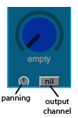
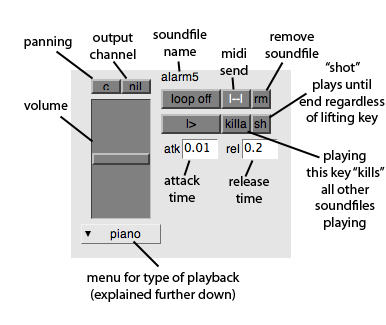
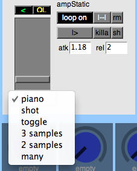
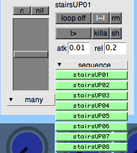

Using The Sampler
The Basics
Loading Soundfiles
To load a soundfile drag one from the finder on to a key, knob or slider. WAV and AIFF files are supported, not MP3 or any other.
You can also shift-click on a key, knob or slider to browse for a file.
On the keys (only) you can drag and drop more than one soundfile to load several files at once. They will spread upwards for as many keys as there are files dragged.
Knob / Slider Settings

panning - individual panning for each knob/slider. Alt-click center pans. (dragging an other knob should make the panning controlled by that knob, dosent work atm)
output channel - when the output channel is set to nil the output will be what the sampler is set to.
Key Sound Settings
Clicking a key brings up the keys settings. Every key can have a different panning, output etc.
There are ways to automate settings depending on what folder the file is from. That is explained in the Preferences helpfile.

Most of this explains itself, except maybe:
rm - removes soundfile from key and clears all settings
killa - stops all other sounds playing on the keys, not on sliders or knobs
sh - "shot", ignores so called 'note off' messages so when you push the key the sound will play to the end of the file even if you stop pressing the key
|--| - "midi send" opens a window that allows for midi messages to be sent when the key is pressed
menu - in the menu you can choose between different kinds of playback:

piano - the sound plays for as long as you hold the key down, stops when you release the key
shot - the sound plays until end of file regardless of releasing the key
toggle - the sound plays until you push the key down a second time
3 samples - this is broken.... or not
first sample on green strip is attack
sample on key is the loop
second sample on green strip is release
2 samples - when this is selected a green strip appears to the right of the menu. Drop a soundfile here or shift-click on it to load a second soundfile to be played. The sound loaded at the key (which name is displayed at the key and at the top of the settings part) plays when pushing the key. When releasing the key the first sound stops and the second starts and plays until the end of the sound, unless the key is pushed again, which stops the second sound and starts the first.
many - this makes it possible to load as many sounds as you want on to one key and play them in sequence, random, or ping-pong (from the first to the last, then reverse back to first), all by hitting one key. If the key is not pushed in 5 seconds the next sound to play is the first. Releasing the key stops the sound unless the sh button is on.

The best and easiest way to use this feature is to put all the sounds you want on the key in a folder, with the names of the files making the order you want, and then drop the folder on a key. This way it happens automagically. You can also choose many from the menu and pull the samples in one by one, or select several and it will expand. Note that the soundfile on the key is not played, only the ones loaded on the green strips.
(I have not tried more than ~50 files so I don't know what the limit is, if there is any...)
PitchWheel -
Progress View
Panic and Kill All Sound